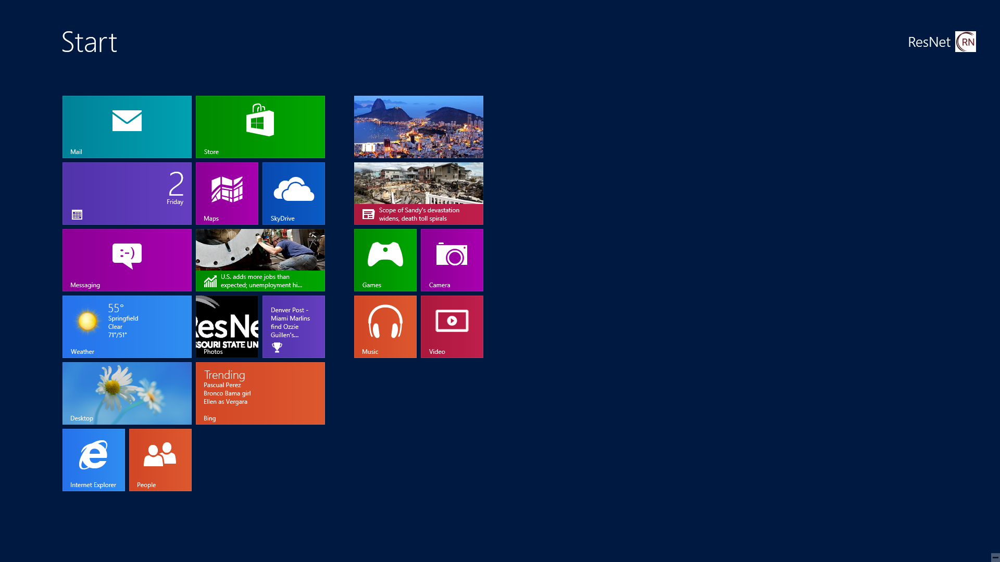
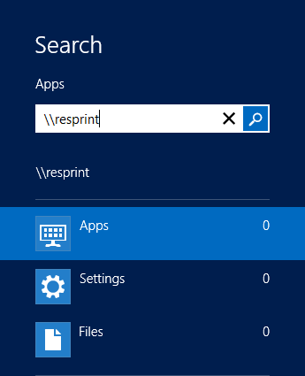
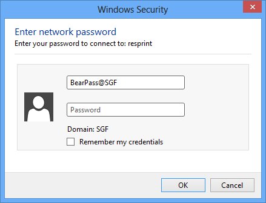
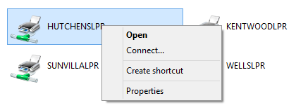

Windows 8 Front Desk printer setup
- At the start screen, begin typing \\resprint.missouristate.edu 
- A box will appear as soon as you begin typing. Once you're done typing it in, hit enter. 
- You will be prompted to enter you BearPass Login and password. Be sure to have @SGF after your BearPass Login. 
- A window will appear with all of the printers listed. Locate the appropriate printer for your building by using the list below. Right-click on the printer and select Connect... 
- The process of your computer installing the printer may take a few minutes, but it will install the printer and appear in your printer list.
- Each time you need to print, you will need to go through the first three steps to ensure you are connected to the server.